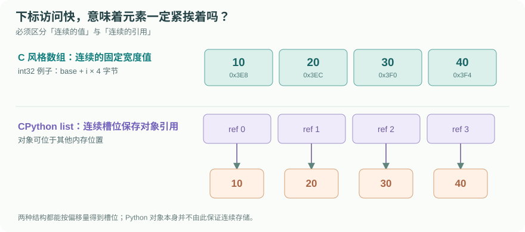
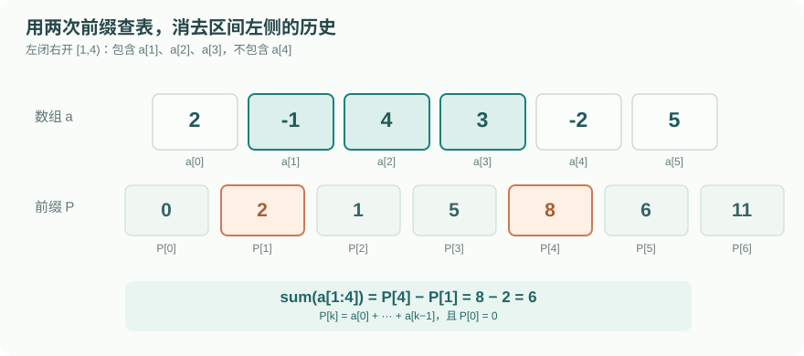
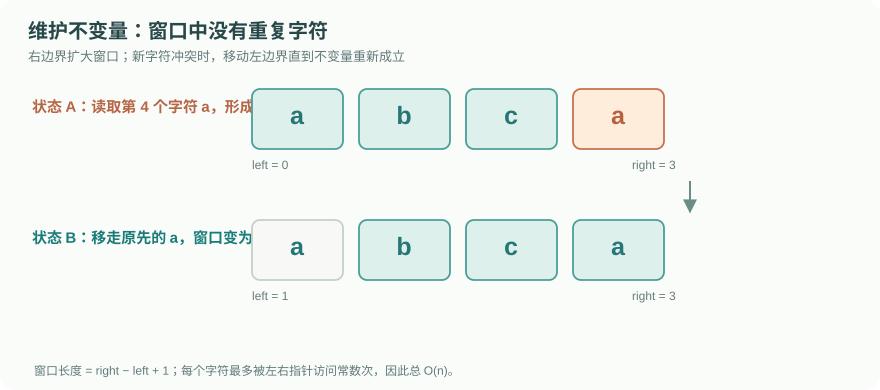

数组与字符串：从内存到区间不变量
数组的快来自下标到槽位的直接映射；前缀和让区间查询变成两次相减；双指针与滑动窗口则利用单调推进避免重复扫描。
数组为何能随机访问？先看存储模型
设有一个固定宽度的数值数组 A，元素宽度为 w 字节，首元素地址为 base，从零开始的第 i 个元素位于 base + i × w。只需完成简单的地址运算，不必从头扫描，因此随机存取模型下按下标访问记为 O(1)。
但“数组”一词在不同语言中指向不同的物理布局。C 的 int32_t a[4] 可以是连续的 4 字节整数值；CPython 的 list 是连续的对象引用槽位，槽位指向的 Python 整数对象本身不必在同一连续地址区间。这两者都可快速按索引访问，但不能据此误认为 Python 数字对象无额外开销。

访问数组中第 i 项是快操作；在无序数组中按值搜索却可能检查全部 n 项。头部插入往往需要移动后面的引用槽位，因此代价可达 O(n)。
动态数组为什么能随时增长？
长度（已经存放的元素数）和容量（当前分配的槽位数）是两个概念。动态数组通常预留一些空槽，追加时如果有空位就直接写入；否则申请更大的存储区并搬移旧槽位。
这解释了：一次尾部 append 可能触发 O(n) 搬移，但在合适的增长策略下，一串追加操作总成本是线性的，每次均摊 O(1)。不同运行时可以采用不同扩容策略，不能拿一个固定倍数宣称是全部 Python 版本的实现细节。
a = []
a.append(10)
a.append(20)
a.append(30)
assert a[1] == 20
a.insert(0, 5) # 在头部插入：已有元素的槽位需要移动
assert a == [5, 10, 20, 30]前缀和：一次预处理，区间查询两次读取
若要反复回答数组中 [l,r) 的元素和，逐段求和每次都要扫描 r−l 个元素。预先定义前缀数组 P，让 P[k] 等于前 k 个元素的和，并令 P[0]=0，便有：
右端是开区间：[1,4) 包含位置 1、2、3，不包含位置 4。选择数组 [2, -1, 4, 3, -2, 5]，得到 P=[0,2,1,5,8,6,11]，因此第 1 到第 3 项之和为 P[4]-P[1]=8-2=6。

def prefix_sums(a):
p = [0]
for x in a:
p.append(p[-1] + x)
return p
def range_sum(p, left, right):
if not 0 <= left <= right < len(p):
raise ValueError("invalid half-open range")
return p[right] - p[left]
a = [2, -1, 4, 3, -2, 5]
p = prefix_sums(a)
assert p == [0, 2, 1, 5, 8, 6, 11]
assert range_sum(p, 1, 4) == 6
assert range_sum(p, 3, 3) == 0前缀和预处理需 O(n) 时间和 O(n) 空间，之后每次区间查询 O(1)。它适合多次查询、数组内容不频繁更改的情形；若大量区间更新与查询交织，则可以考虑树状数组或线段树。
移动左右边界，验证相减
固定数组：[2, -1, 4, 3, -2, 5]
前缀和加哈希：有负数也能找目标区间
如果目标不再是“给定一个区间求和”，而是“有多少个连续子数组的和为 k”，可以根据恒等式 P[r]-P[l]=k 推出 P[l]=P[r]-k。从左向右扫描到第 r 个位置时，记录此前每个前缀值出现的次数，就能在常数预期时间内找出与当前前缀相匹配的历史起点数。
from collections import defaultdict
def count_subarrays_sum_k(a, k):
count = defaultdict(int)
count[0] = 1 # 允许从下标 0 开始的区间
prefix = answer = 0
for x in a:
prefix += x
answer += count[prefix - k]
count[prefix] += 1 # 先查询，再记录当前前缀
return answer
assert count_subarrays_sum_k([1, 1, 1], 2) == 2
assert count_subarrays_sum_k([1, -1, 0], 0) == 3复杂度是预期 O(n) 时间与 O(n) 额外空间。重要的是查询发生在写入当前前缀之前，避免把空区间错算作合法子数组。由于支持负数，这个方案不能简单用“窗口和大就左移”的双指针替代。
双指针：用有序性排除不可能的解
在升序数组中查找两数和为目标值，指针从两端出发。如果两数和太小，左指针右移：在右端不变时，更小的左值不可能帮助达到目标；如果和太大，右指针左移。每步都淘汰一批不可能位置，因此两指针总计最多推进 O(n) 步。
def two_sum_sorted(a, target):
left, right = 0, len(a) - 1
while left < right:
total = a[left] + a[right]
if total == target:
return (left, right)
if total < target:
left += 1
else:
right -= 1
return None
assert two_sum_sorted([1, 2, 4, 7, 11], 9) == (1, 3)
assert two_sum_sorted([1, 1], 2) == (0, 1)
assert two_sum_sorted([], 3) is None这个证明依赖排序。若数组无序，需要先排序（若允许改变顺序，通常 O(n log n)）或改用哈希表保存已见元素（预期 O(n)，额外空间 O(n)）。因此任何“两个指针 O(n)”的结论都必须附上操作前提。
滑动窗口：边界单调推进，维护局部条件
在字符串 "abca" 中求最长无重复字符子串。扫描到第 4 个字符 a 时，当前窗口 "abc" 包含旧的 a；需要让左端前进，移走旧 a，窗口才成为 "bca"。不变量是“窗口中没有重复字符”。

def longest_unique_substring(s):
seen = set()
left = best = 0
for right, char in enumerate(s):
while char in seen:
seen.remove(s[left])
left += 1
seen.add(char)
best = max(best, right - left + 1)
return best
assert longest_unique_substring("abca") == 3
assert longest_unique_substring("aaaa") == 1
assert longest_unique_substring("") == 0时间为预期 O(n)，额外空间最多为不同字符数 O(min(n, |Σ|))。这里的字符串长度按 Python 字符串的 Unicode 码点计数；用户感知的一个文字可能包含多个码点，涉及复杂文本时需另外处理字素簇。
边界条件：何时该换一套结构？
数组常用于随机访问多、插入少的场景。维护多个动态区间查询时，前缀和的 O(1) 查询伴随着元素修改后需要重新计算的代价；这时第 20 章的 Fenwick Tree 或线段树能做不同的权衡。
| 技术 | 依赖条件 | 不适合直接使用的情形 |
|---|---|---|
| 前缀和 | 多次求和、原数组基本静态 | 频繁单点或区间修改 |
| 有序双指针 | 排序与排除方向成立 | 未排序且不能重排 |
| 无重复滑窗 | 左边界移动后可恢复单调可维护条件 | 问题状态不能随着移动而局部更新 |
| 前缀和 + 哈希 | 重复前缀可计数 | 哈希空间无法承受且需更强最坏保证 |
最后按“输入为空、只有一个元素、包含重复、包含负数、边界区间、超大输入”逐一测试。一个算法是否专业，常常取决于你能不能精确说出它什么时候会失效。
带走三个判断准则
- 数组下标快，是因为槽位可定位；CPython list 存连续引用槽位，而非保证 Python 对象本体连续。
- 前缀和公式 P[r]−P[l] 对负数仍成立；查询 O(1) 的代价是 O(n) 预处理与额外空间。
- 双指针和滑动窗口的线性时间来自可证明的不变量和单调推进，不是来自模板的形状。
继续学习与校验资料
- Python 设计 FAQ：list 实现 — 连续引用槽位的官方说明
- Python Unicode HOWTO — 码点与文本字符计数
- MIT 6.006 — 搜索、数组与渐进分析
- 第 20 章 — 探索频繁更新下的区间数据结构